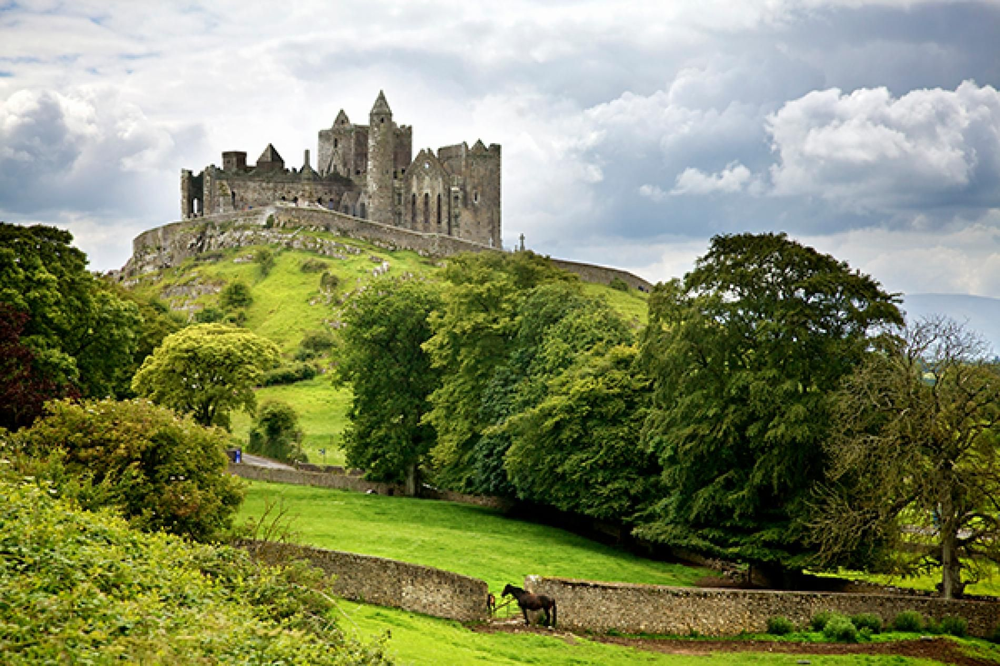

India

24 Best Indian Dishes To Try In India Or In An Indian Restaurant
Indian food is lauded around the world for its complex flavors, diverse spices, and aroma. Traveling to India is a dream of many and much of the experience is trying local food from chicken tikka masala to homemade samosas.
Mexico

36 Best Places To Visit In Mexico In 2023
We have often considered settling down in Mexico when we retire. Each time we visit México, we love it! We haven’t visited everywhere in the country but love to add a new destination each time we go down. Mexico is a country made up of 758,000 square miles and 31 states.
Greece

42 Best Things To Do In Santorini, Greece In 2023
There is a reason that Santorini is one of Greece’s most popular destinations. Located in the Cyclades Islands of the Aegean Sea, Santorini is the perfect place to enjoy stunning sunsets, different-colored beaches, and the famed blue-dome churches.
Switzerland

24 Incredible And Fun Facts About Switzerland
Have you had Switzerland sitting on your bucket list for a while now? Would you like to learn some interesting facts about Switzerland so you can get even more excited about visiting this unique country? Well, we’ve got you covered.
United States

Where To Stay In New York City In 2023
Deciding where to stay in New York City can be overwhelming. There are so many awesome neighborhoods in New York that cater to different travel experiences. From iconic places like Times Square and the Empire State Building to the world-famous.
Italy

21 Best Monuments In Rome To See In Your Lifetime
Rome is a fascinating city dating back thousands of years. The entire city is filled with famous landmarks that everyone in the world will recognize. We took a stroll around the ancient ruins to capture the most amazing monuments in italy.
Caribbean

Haitian Food: 21 Best Haitian Dishes To Try In Haiti Or At Home
When it comes to cuisine, Haiti is small but mighty. Haitian food has the most blended, fascinating flavor base of most other countries in the world. Haitian food is a form of Creole cuisine. Haitian food is a beautiful fusion.
Germany

17 Best Day Trips From Munich In 2023
Munich is the Bavarian capital (technically an unofficial capital) and an absolute cultural hotspot. The city’s history is next to none, with harrowing tales of World War II and the catastrophic rise of the Nazi Party
Ireland

40 Best Things To Do In Dublin, Ireland In 2023
Ireland is the land of leprechauns and shamrocks, Guinness, and Irish whiskey and Dublin is the heartbeat of the country. It was founded by the Vikings in 841 on the banks of the River Liffey and was called Dubh Linn.
France
24 Best Day Trips From Paris In 2023
Paris is so mesmerizing you might wonder why on Earth you’d want to leave – even just on a day trip. Don’t get sucked into this line of thinking, though, as Paris is surrounded by some spectacular attractions and day.
Indonesia

Indonesian Food: 30 Dishes To Try In Indonesia Or At Home
Indonesian food is some of the tastiest on the planet. Indonesia has delicious fried foods, from the classic nasi goreng to the sweet pisang goreng. It isn’t just Indonesia’s fried dishes; the country has some tasty soups, including oxtail soup.
Canada

23 Best Things To Do In Saskatoon, Saskatchewan
Located in the province of Saskatchewan, Saskatoon got its name from the Saskatoon Berry, a wild berry that grows in the region. Nicknamed “The Paris of the Prairies”, Saskatoon is also known as the “City of Bridges.